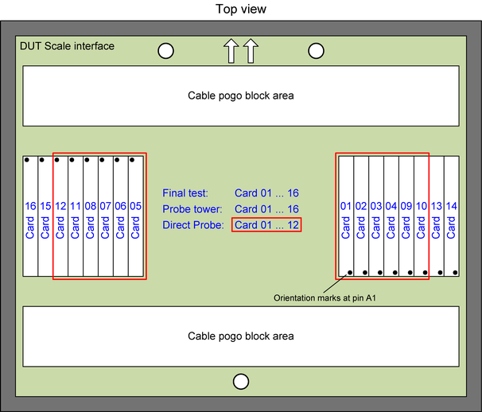

MUX cards filling rules
MUX cards are installed in the central area of the DUT interface between the pogo block groups. Up to eight cards can be installed in each of the two card mounting frames.
| Supported V93000 systems : EXA Scale (SmarTest 8), Smart Scale (SmarTest 7+8) |
The diagram below shows the filling order of the MUX cards. The filling order addresses:
- Balancing if the total spring load between the two card mounting frames.
- Balancing of the DUT signal routing board. Signals are distributed between the left and right side.

Note In case of a Direct-Probe interface
is used up to six cards can be mounted per
MUX card frame. The supported MUX cards for a Direct-Probe™ configuration are marked red in the diagram
above.
Functional changes
- Introduced in SmarTest 7.3.2 / 8.1.2